# A tibble: 20,778 × 13
name year month day hour lat long status category wind pressure
<chr> <dbl> <dbl> <int> <dbl> <dbl> <dbl> <fct> <dbl> <int> <int>
1 Amy 1975 6 27 0 27.5 -79 tropical d… NA 25 1013
2 Amy 1975 6 27 6 28.5 -79 tropical d… NA 25 1013
3 Amy 1975 6 27 12 29.5 -79 tropical d… NA 25 1013
4 Amy 1975 6 27 18 30.5 -79 tropical d… NA 25 1013
5 Amy 1975 6 28 0 31.5 -78.8 tropical d… NA 25 1012
6 Amy 1975 6 28 6 32.4 -78.7 tropical d… NA 25 1012
7 Amy 1975 6 28 12 33.3 -78 tropical d… NA 25 1011
8 Amy 1975 6 28 18 34 -77 tropical d… NA 30 1006
9 Amy 1975 6 29 0 34.4 -75.8 tropical s… NA 35 1004
10 Amy 1975 6 29 6 34 -74.8 tropical s… NA 40 1002
# ℹ 20,768 more rows
# ℹ 2 more variables: tropicalstorm_force_diameter <int>,
# hurricane_force_diameter <int>CS50’s Introduction to Programming with R
mes notes de manière linéaire et non optimisée
Introduction
pas fait ou m’en souviens pas
Representing Data
pas fait ou m’en souviens pas
Transforming Data
pas fait ou m’en souviens pas
Applying Functions
pas fait ou m’en souviens pas
Tidying Data
Travail sur le dataset storms inclus dans le package tidyverse.
Fonction ‘select’
Pour sélectionner des colonnes
Dans l’exemple suivant on en enlève avec “-” :
storms %>%
select(
-c(lat, long, pressure, tropicalstorm_force_diameter, hurricane_force_diameter)
)# A tibble: 20,778 × 8
name year month day hour status category wind
<chr> <dbl> <dbl> <int> <dbl> <fct> <dbl> <int>
1 Amy 1975 6 27 0 tropical depression NA 25
2 Amy 1975 6 27 6 tropical depression NA 25
3 Amy 1975 6 27 12 tropical depression NA 25
4 Amy 1975 6 27 18 tropical depression NA 25
5 Amy 1975 6 28 0 tropical depression NA 25
6 Amy 1975 6 28 6 tropical depression NA 25
7 Amy 1975 6 28 12 tropical depression NA 25
8 Amy 1975 6 28 18 tropical depression NA 30
9 Amy 1975 6 29 0 tropical storm NA 35
10 Amy 1975 6 29 6 tropical storm NA 40
# ℹ 20,768 more rowsEt donc effectivement elles n’apparaissent plus dans notre tibble.
Utilisation de ‘ends_with’ pour optimiser ce cas
On aurait aussi pu écrire :
storms %>%
select(
-c(lat, long, pressure, ends_with("diameter"))
)# A tibble: 20,778 × 8
name year month day hour status category wind
<chr> <dbl> <dbl> <int> <dbl> <fct> <dbl> <int>
1 Amy 1975 6 27 0 tropical depression NA 25
2 Amy 1975 6 27 6 tropical depression NA 25
3 Amy 1975 6 27 12 tropical depression NA 25
4 Amy 1975 6 27 18 tropical depression NA 25
5 Amy 1975 6 28 0 tropical depression NA 25
6 Amy 1975 6 28 6 tropical depression NA 25
7 Amy 1975 6 28 12 tropical depression NA 25
8 Amy 1975 6 28 18 tropical depression NA 30
9 Amy 1975 6 29 0 tropical storm NA 35
10 Amy 1975 6 29 6 tropical storm NA 40
# ℹ 20,768 more rowsAutres fonctions du genre :
starts_with(): Starts with an exact prefix.ends_with(): Ends with an exact suffix.contains(): Contains a literal string.matches(): Matches a regular expression.num_range(): Matches a numerical range like x01, x02, x03.
Fonction ‘filter’
Pour sélectionner des lignes
Par exemple pour sélectionner les lignes contenant la valeur “hurricane” dans la colonne status :
storms %>%
select(-c(lat, long, pressure, ends_with("diameter"))) %>%
filter(status == "hurricane")# A tibble: 5,100 × 8
name year month day hour status category wind
<chr> <dbl> <dbl> <int> <dbl> <fct> <dbl> <int>
1 Blanche 1975 7 27 6 hurricane 1 65
2 Blanche 1975 7 27 12 hurricane 1 70
3 Blanche 1975 7 27 18 hurricane 1 75
4 Blanche 1975 7 28 0 hurricane 1 75
5 Blanche 1975 7 28 6 hurricane 1 70
6 Caroline 1975 8 30 0 hurricane 1 65
7 Caroline 1975 8 30 6 hurricane 1 65
8 Caroline 1975 8 30 12 hurricane 1 65
9 Caroline 1975 8 30 18 hurricane 1 70
10 Caroline 1975 8 31 0 hurricane 3 100
# ℹ 5,090 more rowsFonction ‘arrange’
Pour ordonner des lignes selon la valeur des colonnes
(c’est incompréhensible dit comme ça mais rien de sorcier, c’est pour ordonner quoi)
Pour ordonner par ordre décroissant on ajoute desc :
On peut ordonner par plusieurs variables (ordre dans lequel on les écrit compte)
storms %>%
select(-c(lat, long, pressure, ends_with("diameter"))) %>%
filter(status == "hurricane") %>%
arrange(desc(wind), name)# A tibble: 5,100 × 8
name year month day hour status category wind
<chr> <dbl> <dbl> <int> <dbl> <fct> <dbl> <int>
1 Allen 1980 8 7 18 hurricane 5 165
2 Dorian 2019 9 1 16 hurricane 5 160
3 Dorian 2019 9 1 18 hurricane 5 160
4 Gilbert 1988 9 14 0 hurricane 5 160
5 Wilma 2005 10 19 12 hurricane 5 160
6 Allen 1980 8 5 12 hurricane 5 155
7 Allen 1980 8 7 12 hurricane 5 155
8 Allen 1980 8 8 0 hurricane 5 155
9 Allen 1980 8 9 6 hurricane 5 155
10 Dorian 2019 9 1 12 hurricane 5 155
# ℹ 5,090 more rowsFonction ‘distinct’
Pour ne pas avoir les mêmes exactes lignes plus d’une fois
En précisant une ou plusieurs variables dans cette fonction, cela permet de ne chercher que des valeurs uniques pour les variables en question
Par exemple, si on ne veut avoir qu’une ligne ayant le même nom et année :
nb : .keep_all permet de garder toutes les autres colonnes que celles qui constituent notre critère de tri pour distinct
storms %>%
select(-c(lat, long, pressure, ends_with("diameter"))) %>%
filter(status == "hurricane") %>%
arrange(desc(wind), name) %>%
distinct(name, year, .keep_all = T)# A tibble: 337 × 8
name year month day hour status category wind
<chr> <dbl> <dbl> <int> <dbl> <fct> <dbl> <int>
1 Allen 1980 8 7 18 hurricane 5 165
2 Dorian 2019 9 1 16 hurricane 5 160
3 Gilbert 1988 9 14 0 hurricane 5 160
4 Wilma 2005 10 19 12 hurricane 5 160
5 Irma 2017 9 5 18 hurricane 5 155
6 Milton 2024 10 7 20 hurricane 5 155
7 Mitch 1998 10 26 18 hurricane 5 155
8 Rita 2005 9 22 3 hurricane 5 155
9 Andrew 1992 8 23 18 hurricane 5 150
10 Anita 1977 9 2 6 hurricane 5 150
# ℹ 327 more rowsFonction ‘write.csv’
Pour enregistrer sous forme de fichier .csv :
Avec ici le choix d’enlever les noms de colonnes
hurricanes %>%
select(c(year, name, wind)) %>%
write.csv("hurricanes.csv", row.names = F)Fonction ‘read.csv’
Pour ouvrir et stocker un csv dans un objet :
hurricanes <- read.csv("hurricanes.csv")Fonction ‘group_by’
Permet de regrouper selon une ou plusieurs variables (le cas échéant, l’ordre compte)
Par exemple, si on veut trouver l’ouragan le plus puissant pour chaque année :
hurricanes %>%
group_by(year) %>%
slice_max(order_by = wind)# A tibble: 57 × 8
# Groups: year [50]
name year month day hour status category wind
<chr> <dbl> <dbl> <int> <dbl> <fct> <dbl> <int>
1 Gladys 1975 10 2 12 hurricane 4 120
2 Belle 1976 8 9 0 hurricane 3 105
3 Anita 1977 9 2 6 hurricane 5 150
4 Ella 1978 9 4 12 hurricane 4 120
5 David 1979 8 30 18 hurricane 5 150
6 Allen 1980 8 7 18 hurricane 5 165
7 Harvey 1981 9 15 0 hurricane 4 115
8 Debby 1982 9 18 0 hurricane 4 115
9 Alicia 1983 8 18 6 hurricane 3 100
10 Diana 1984 9 12 0 hurricane 4 115
# ℹ 47 more rowsIci slice_max permet de prendre la plus grande valeur pour wind. Il existe d’autres fonctions du genre dans le package dplyr (inclus dans le tidyverse anyway) :
slice_head()andslice_tail()select the first or last rows.slice_sample()randomly selects rows.slice_min()andslice_max()select rows with the smallest or largest values of a variable.
nb : pour que le regroupement soit temporaire/pour dégrouper, on utilise ungroup()
Fonction ‘summarise’
Généralement utilisée à la suite d’un group_by, permet d’effectuer plusieurs types de calculs comme la moyenne, le min, max, somme, etc.
Par exemple si on veut savoir combien d’ouragans se sont produits chaque année :
hurricanes %>%
group_by(year) %>%
summarise(hurricanes = n())# A tibble: 50 × 2
year hurricanes
<dbl> <int>
1 1975 6
2 1976 6
3 1977 5
4 1978 5
5 1979 5
6 1980 9
7 1981 7
8 1982 2
9 1983 3
10 1984 5
# ℹ 40 more rowsÉcrire hurricanes = avant le n() dans summarise permet de nommer la colonne qui donnera le résultat au lieu d’avoir juste n().
Paranthèse mais dans un des exercices la syntaxe de sum m’a fait excessivement suer pour ce que c’est, donc je le note ici :
(le prompt était “Summarize the data in the tibble to find the total emissions for each pollutant. Sort the pollutants from highest to lowest emissions.”)
air <- air |>
group_by(pollutant) |>
summarize(emissions = sum(emissions)) |>
arrange(desc(emissions))Fonction ‘pivot’
Plus spécifiquement pivot_wider : à utiliser quand y’a des valeurs en ligne qui devraient être des colonnes elles-mêmes.
À l’inverse, pivot_longer : est pour des colonnes qui devraient être des valeurs en ligne.
On passe à un autre dataset pour illustrer cette fonction. Ici on a une colonne “attribute” qui contient soit “GPA” soit “major” qui devraient elles-mêmes être des colonnes et non des valeurs.
student attribute value
1 Mario major Statistics
2 Mario GPA 3.5
3 Peach major Computer Science
4 Peach GPA 4
5 Bowser major Data Science
6 Bowser GPA 3.7
7 Daisy major Data Science
8 Daisy GPA 3.9
9 Luigi major Computer Science
10 Luigi GPA 3.0
11 Nabbit major Statistics
12 Nabbit GPA 2.5On doit donc utiliser pivot_wider dans ce cas :
students <- pivot_wider(
students,
id_cols = student,
names_from = attribute, # ce qu'on veut en nom de nouvelles colonnes
values_from = value # ce qu'on veut en contenu de colonnes
)
students# A tibble: 6 × 3
student major GPA
<chr> <chr> <chr>
1 Mario Statistics 3.5
2 Peach Computer Science 4
3 Bowser Data Science 3.7
4 Daisy Data Science 3.9
5 Luigi Computer Science 3.0
6 Nabbit Statistics 2.5 Je ne pense pas qu’il faille nécessairement utiliser “id_cols”, qui semble jouer un rôle de clé de jointure (?) ça m’a posé problème dans un des exercices et quand je l’ai enlevé ça marchait bien. Jsp.
Spécifique à cet exemple mais : attention, dans ce qu’on a obtenu, la colonne GPA est de type “character” tandis qu’elle contient des valeurs numériques, il faut donc convertir avant de faire autre chose.
students$GPA <- as.numeric(students$GPA)On peut ensuite faire des opérations comme la moyenne avec summarise :
students %>%
group_by(major) %>%
summarise(GPA = mean(GPA))# A tibble: 3 × 2
major GPA
<chr> <dbl>
1 Computer Science 3.5
2 Data Science 3.8
3 Statistics 3 stringr pour nettoyer un dataset dégueulasse
On passe à un nouveau set pour cet exemple.
show
1 Avatar: the last airbender
2 Ben 10
3 Arthur
4 Spongebob Squarepants
5 Phineas and Ferb
6 Hannah Montana
7 Arthur
8 Spongebob Squarepants
9 Avatar: The Last Airbender
10 Phineas and Ferb
11 Fairly Oddparents
12 Spongebob Squarepants
13 Phineas and Ferb
14 Jimmy Neutron
15 Jimmy Neutron
16 Arthur
17 Phineas and Ferb
18 Avatar
19 Phineas and Ferb
20 Spongebob Squarepants
21 Kim Possible
22 Avatar: The Last Airbender
23 Jimmy Neutron
24 Arthur
25 Ben 10
26 Avatar: The Last Airbender
27 Avatar: The Last Airbender
28 Scooby Doo
29 Avatar: The Last Airbender
30 Phineas And Ferb
31 Avatar: The Last Airbender
32 Avatar: The Last Airbender
33 Avatar: The Last Airbender
34 The Proud Family
35 Spongebob Squarepants
36 Jimmy Neutron
37 Spongebob Squarepants
38 Fairly Oddparents
39 Scooby Doo
40 Arthur
41 Arthur
42 Ben 10
43 Spongebob Squarepants
44 Avatar: The Last Airbender
45 Arthur
46 Arthur
47 Spongebob Squarepants
48 Kim Possible
49 Arthur
50 Phineas And FerbOn a une liste de dessins animés/séries/films/whatever, on les classe par nombre de votes comme qui suit :
shows %>%
group_by(show) %>%
summarise(votes = n()) %>%
ungroup() %>%
arrange(desc(votes))# A tibble: 20 × 2
show votes
<chr> <int>
1 "Arthur" 9
2 "Spongebob Squarepants" 8
3 "Avatar: The Last Airbender" 6
4 "Phineas and Ferb" 4
5 "Ben 10" 3
6 "Jimmy Neutron" 3
7 "Fairly Oddparents" 2
8 "Kim Possible" 2
9 "Scooby Doo" 2
10 " Avatar: The Last Airbender" 1
11 "Avatar" 1
12 "Avatar: The Last Airbender" 1
13 "Avatar: The Last Airbender " 1
14 "Avatar: the last airbender" 1
15 "Hannah Montana" 1
16 "Jimmy Neutron" 1
17 "Phineas And Ferb" 1
18 "Phineas And Ferb " 1
19 "Phineas and Ferb" 1
20 "The Proud Family" 1On se rend compte du problème avec Avatar et d’autres : y’a plusieurs noms de show qui correspondent au même truc mais sont pas écrits pareil.
On peut enlever les espaces vides avec ‘str_trim’ (enlève les espaces avant et après mais pas dedans) et ‘str_squish’ (enlève les espaces à l’intérieur/dedans) :
shows$show <- shows$show %>%
str_trim() %>%
str_squish()# A tibble: 14 × 2
show votes
<chr> <int>
1 Arthur 9
2 Avatar: The Last Airbender 9
3 Spongebob Squarepants 8
4 Phineas and Ferb 5
5 Jimmy Neutron 4
6 Ben 10 3
7 Fairly Oddparents 2
8 Kim Possible 2
9 Phineas And Ferb 2
10 Scooby Doo 2
11 Avatar 1
12 Avatar: the last airbender 1
13 Hannah Montana 1
14 The Proud Family 1On constate toujours des différences, au niveau des minuscules/majuscules par exemple.
Plusieurs options existent pour homogénéiser :
‘
str_to_lower’ pour tout mettre en minuscules,‘
str_to_upper’ pour tout mettre en majuscules,‘
str_to_title’ pour que chaque mot ait sa première lettre en majuscule
C’est ce dernier qui est le plus pertinent pour notre exemple ici
shows$show <- shows$show %>%
str_trim() %>%
str_squish() %>%
str_to_title()# A tibble: 12 × 2
show votes
<chr> <int>
1 Avatar: The Last Airbender 10
2 Arthur 9
3 Spongebob Squarepants 8
4 Phineas And Ferb 7
5 Jimmy Neutron 4
6 Ben 10 3
7 Fairly Oddparents 2
8 Kim Possible 2
9 Scooby Doo 2
10 Avatar 1
11 Hannah Montana 1
12 The Proud Family 1Il reste qqc à nettoyer : on a des valeurs “Avatar: The Last Airbender” et “Avatar” qui sont séparées, on aimerait qu’elles soient considérées comme la même chose, pour ce faire on va utiliser ‘str_detect’.
shows$show[str_detect(shows$show, "Avatar")] <- "Avatar : The Last Airbender"# A tibble: 11 × 2
show votes
<chr> <int>
1 Avatar : The Last Airbender 11
2 Arthur 9
3 Spongebob Squarepants 8
4 Phineas And Ferb 7
5 Jimmy Neutron 4
6 Ben 10 3
7 Fairly Oddparents 2
8 Kim Possible 2
9 Scooby Doo 2
10 Hannah Montana 1
11 The Proud Family 1On affecte un nom commun à tous les termes détectés.
Warning
!!! être précautionneux quand on utilise ça et être sûr de ce qu’on remplace
Visualizing Data
DIAGRAMME EN BARRES
On travaille sur le dataset suivant :
candidate votes
1 Mario 100
2 Peach 200
3 Bowser 150Fonction ‘ggplot’
Pour faire des représentations graphiques.
Pour le dataset qui nous sert d’exemple, il est pertinent de faire un diagramme en barres.
Pour faire un graphique de base de la base il faut avoir un dataset, préciser nos axes avec aes et geom_col() :
ggplot(votes, aes(x = candidate, y = votes)) +
geom_col()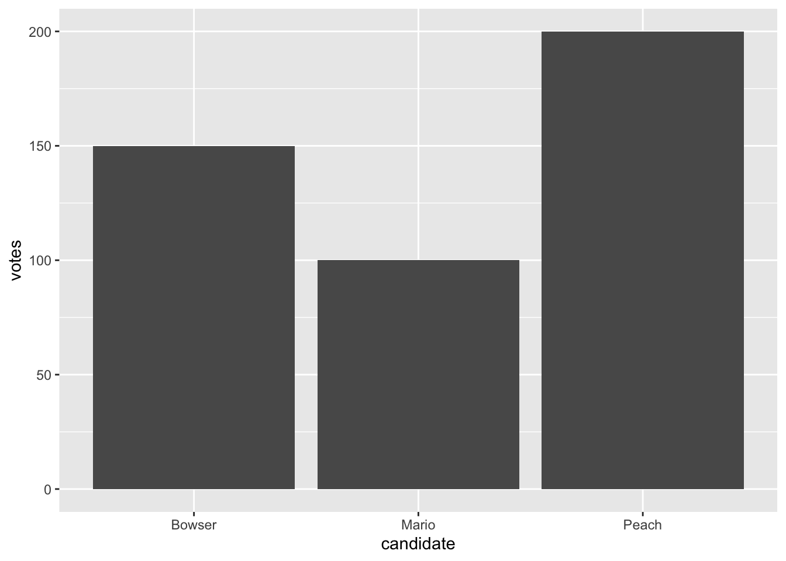
Fonction ‘scale’
Pour changer l’échelle (x ou y, continue ou discrète).
Par exemple ici on veut augmenter un peu l’espace au dessus, donc on va utiliser scale_y_continuous parce qu’on a des données continues sur l’axe y.
Cette fonction prend pour argument limits, qui prend pour valeur un vecteur (le début et la fin de notre échelle).
On choisit ici que l’échelle de l’axe y aille de 0 à 250.
ggplot(votes, aes(x = candidate, y = votes)) +
geom_col() +
scale_y_continuous(limits = c(0, 250))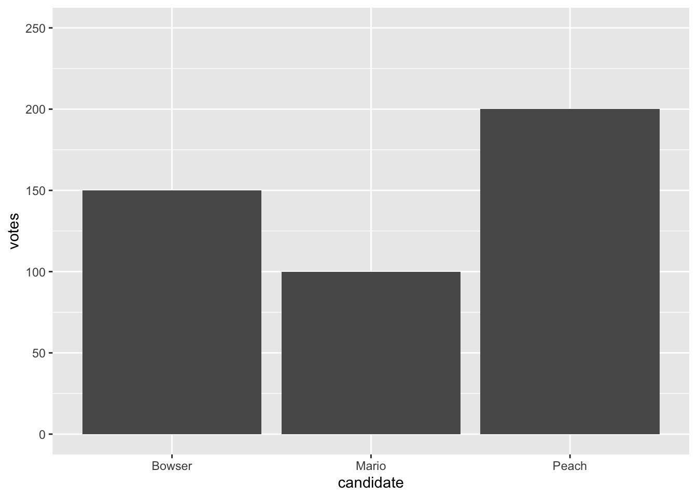
Fonction ‘labs’
Labs is short for labels, donc les étiquettes.
Par exemple pour renommer nos axes x, y et donner un titre :
ggplot(votes, aes(x = candidate, y = votes)) +
geom_col() +
scale_y_continuous(limits = c(0, 250)) +
labs(
x = "Candidate",
y = "Votes",
title = "Election Results"
)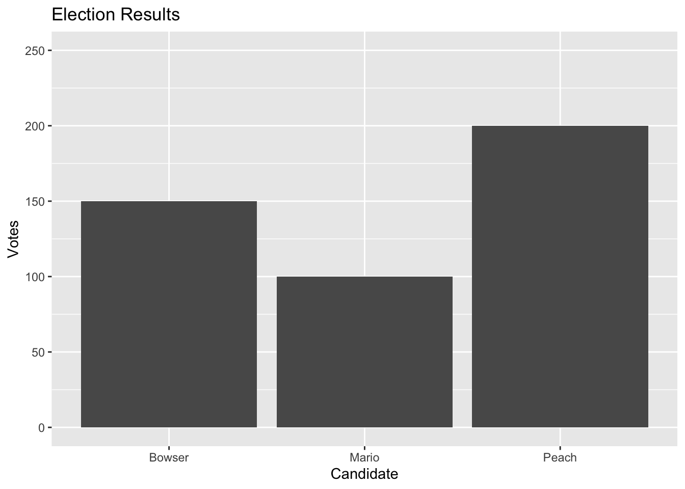
Pour changer les couleurs, il faut utiliser l’argument aes dans lequel on met fill dans geom_col().
Ici on fait en sorte que la couleur dépende de la colonne candidate (donc une couleur par candidat).
ggplot(votes, aes(x = candidate, y = votes)) +
geom_col(aes(fill = candidate)) +
scale_y_continuous(limits = c(0, 250)) +
labs(
x = "Candidate",
y = "Votes",
title = "Election Results"
)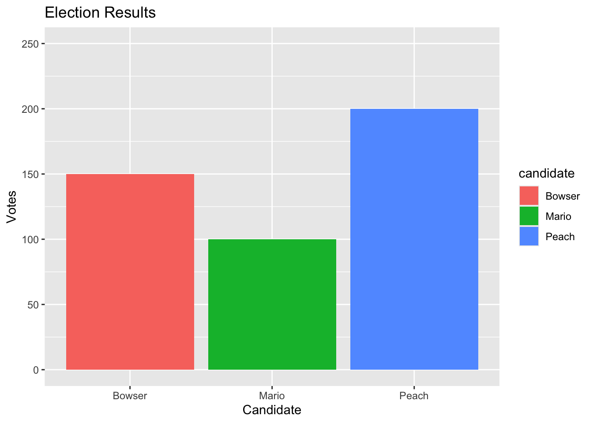
Pour être inclusif envers les daltoniens, on utilise les palettes viridis.
Ainsi, pour adapter les couleurs choisies de base en des couleurs inclusives, on ajoute ici scale_fill_viridis_d() où le d correspond au fait que nos catégories sont discrètes.
ggplot(votes, aes(x = candidate, y = votes)) +
geom_col(aes(fill = candidate)) +
scale_fill_viridis_d() +
scale_y_continuous(limits = c(0, 250)) +
labs(
x = "Candidate",
y = "Votes",
title = "Election Results"
)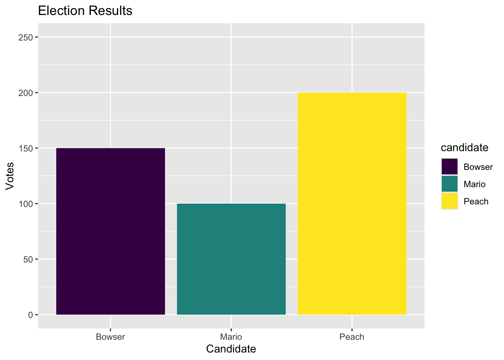
Et boum c’est daltonien-friendly.
On en profite pour renommer le titre de la légende en écrivant le nom désiré entre les paranthèses de scale_fill_viridis_d().
ggplot(votes, aes(x = candidate, y = votes)) +
geom_col(aes(fill = candidate)) +
scale_fill_viridis_d("Candidate") +
scale_y_continuous(limits = c(0, 250)) +
labs(
x = "Candidate",
y = "Votes",
title = "Election Results"
)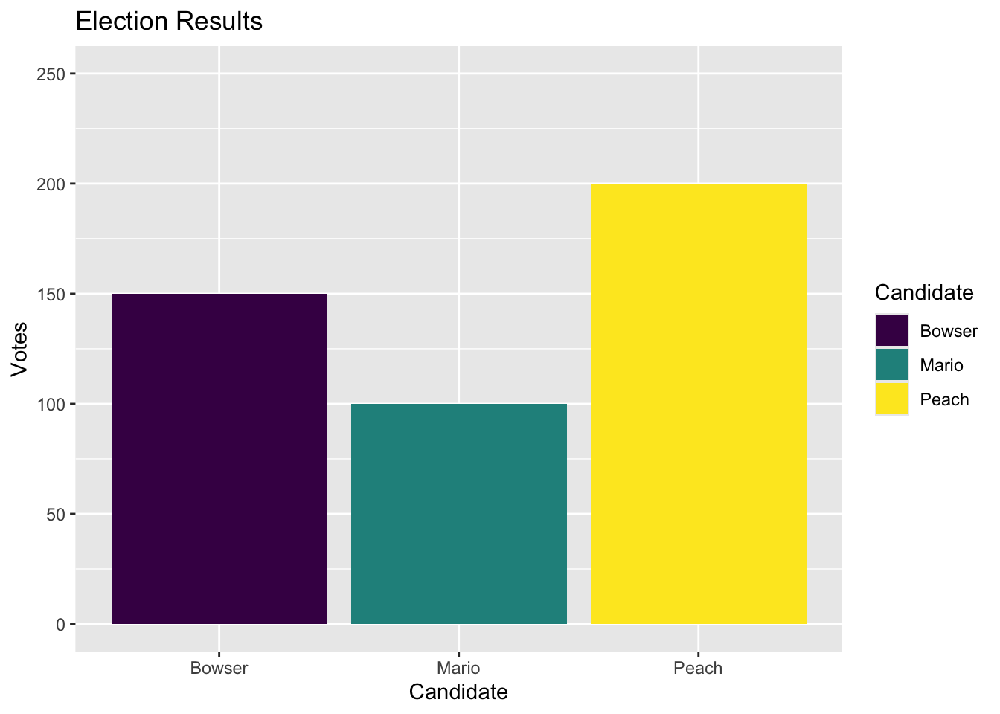
Fonction ‘theme’
Plusieurs thèmes sont disponibles, commencent tous par theme_ on ajoute cette fonction à la fin.
ggplot(votes, aes(x = candidate, y = votes)) +
geom_col(aes(fill = candidate)) +
scale_fill_viridis_d("Candidate") +
scale_y_continuous(limits = c(0, 250)) +
labs(
x = "Candidate",
y = "Votes",
title = "Election Results"
) +
theme_classic()Fonction ‘ggsave’
Pour sauvegarder notre plot
(après avoir stocké notre plot dans un objet ‘p’, on choisit ici la largeur et hauteur désirée)
ggsave(
"votes.png",
plot = p,
width = 1200,
height = 900,
units = "px"
)NUAGE DE POINTS
On travaille à présent sur le dataset suivant :
Maintenant au lieu d’utiliser geom_col on va utiliser geom_point :
ggplot(
candy,
aes(x = price_percentile, y = sugar_percentile)
) +
geom_point()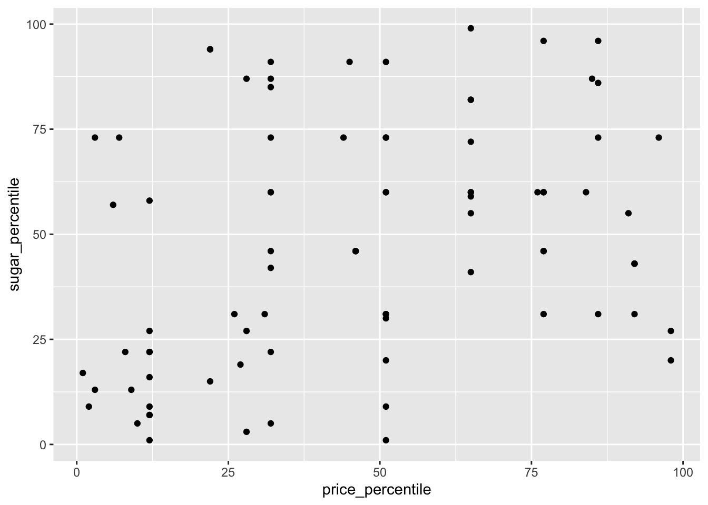
Mais parfois on a des points qui vont avoir exactement les mêmes valeurs et vont donc se superposer. Pour remédier à ça, on peut faire en sorte que ce type de points soient un peu séparés en utilisant geom_jitter à la place de geom_point.
Donc on fait ça, on ajoute des titres à nos axes, on change le thème en classique…
Pour changer la couleur on met l’argument color au sein de geom_jitter :
ggplot(
candy,
aes(x = price_percentile, y = sugar_percentile)
) +
geom_jitter(
color = "darkorchid"
) +
labs(
x = "Price",
y = "Sugar",
title = "Price and Sugar"
) +
theme_classic()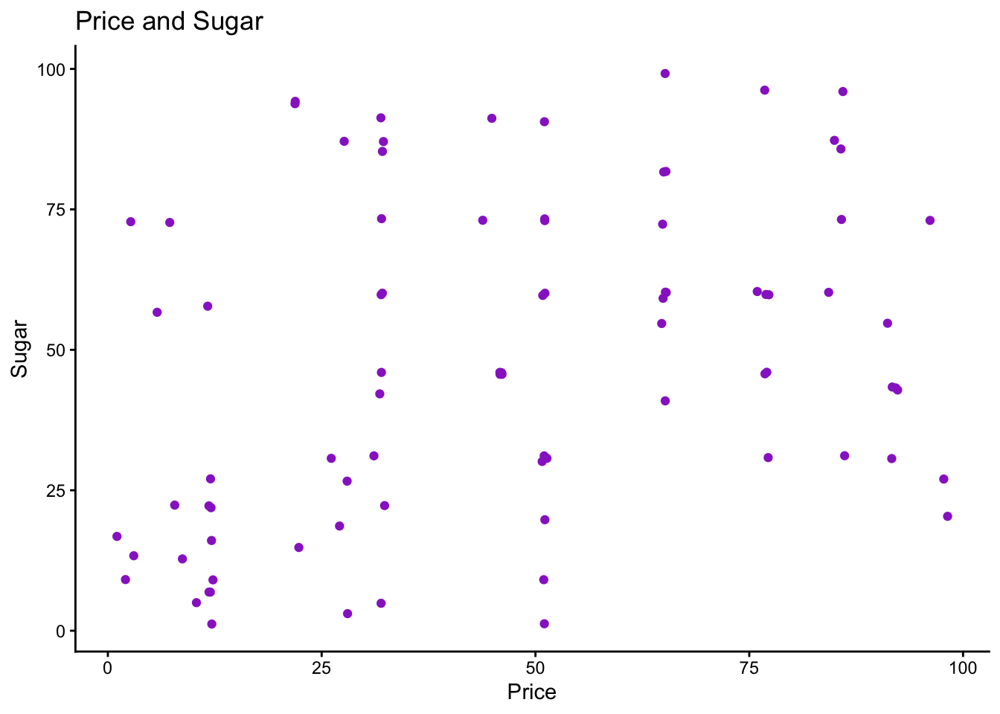
Pour changer la taille des points, on utilise size (la valeur par défaut est 1.5 ou qqc comme ça) :
ggplot(
candy,
aes(x = price_percentile, y = sugar_percentile)
) +
geom_jitter(
color = "darkorchid",
size = 2
) +
labs(
x = "Price",
y = "Sugar",
title = "Price and Sugar"
) +
theme_classic()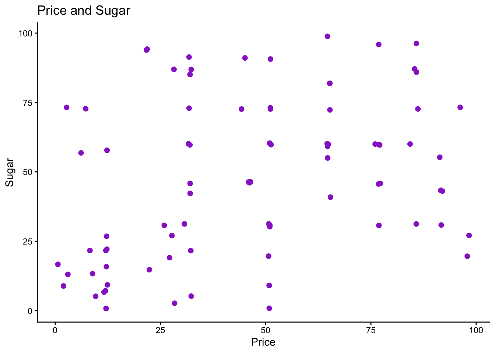
On peut aussi changer la forme avec shape (plein de formes possibles, tu connais). La forme 21 sont des cercles dont on peut changer la couleur de fond et de contour.
ggplot(
candy,
aes(x = price_percentile, y = sugar_percentile)
) +
geom_jitter(
color = "darkorchid",
fill = "orchid",
shape = 21,
size = 2
) +
labs(
x = "Price",
y = "Sugar",
title = "Price and Sugar"
) +
theme_classic()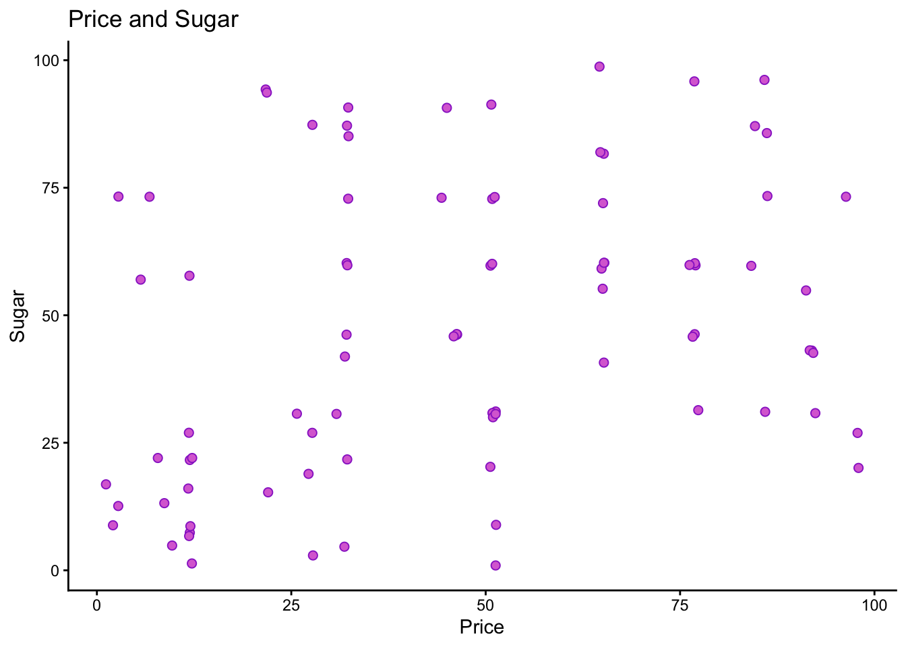
COURBES
On passe au dataset suivant qui décrit la vitesse du vent de la tempête Anita et la date et heure où ces vents ont été observés :
# A tibble: 20 × 2
timestamp wind
<dttm> <int>
1 1977-08-29 12:00:00 20
2 1977-08-29 18:00:00 25
3 1977-08-30 00:00:00 30
4 1977-08-30 06:00:00 40
5 1977-08-30 12:00:00 50
6 1977-08-30 18:00:00 65
7 1977-08-31 00:00:00 70
8 1977-08-31 06:00:00 75
9 1977-08-31 12:00:00 75
10 1977-08-31 18:00:00 80
11 1977-09-01 00:00:00 80
12 1977-09-01 06:00:00 85
13 1977-09-01 12:00:00 90
14 1977-09-01 18:00:00 110
15 1977-09-02 00:00:00 140
16 1977-09-02 06:00:00 150
17 1977-09-02 12:00:00 120
18 1977-09-02 18:00:00 70
19 1977-09-03 00:00:00 40
20 1977-09-03 06:00:00 25On peut rajouter geom_line après geom_point pour relier les points.
nb : on peut aussi utiliser geom_line tout seul, et dans ce cas on a juste un tracé sans points
ggplot(
anita,
aes(x = timestamp, y = wind)
) +
geom_point() +
geom_line()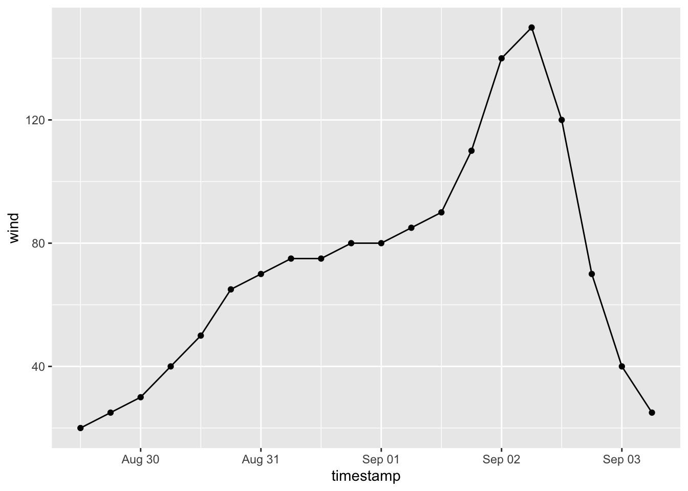
L’ordre dans lequel on écrit geom_point et geom_line importe : c’est comme un système de calques, le dernier sera celui le plus au dessus (on le remarque quand on change les couleurs).
ggplot(
anita,
aes(x = timestamp, y = wind)
) +
geom_line() +
geom_point(color = "deepskyblue4") +
labs(
x = "Date",
y = "Wind Speed (Knots)",
title = "Hurricane Anita"
)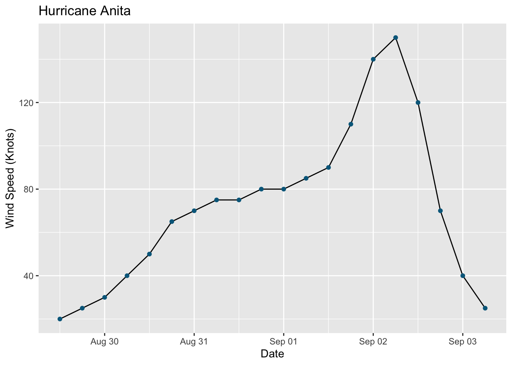
Concernant les lignes, on peut changer, à l’intérieur de geom_line() le type de ligne (pointillés, etc.) et son épaisseur.
ggplot(
anita,
aes(x = timestamp, y = wind)
) +
geom_line(
linetype = 1,
linewidth = 0.5,
) +
geom_point(
color = "deepskyblue4",
size = 2) +
labs(
x = "Date",
y = "Wind Speed (Knots)",
title = "Hurricane Anita"
) +
theme_classic()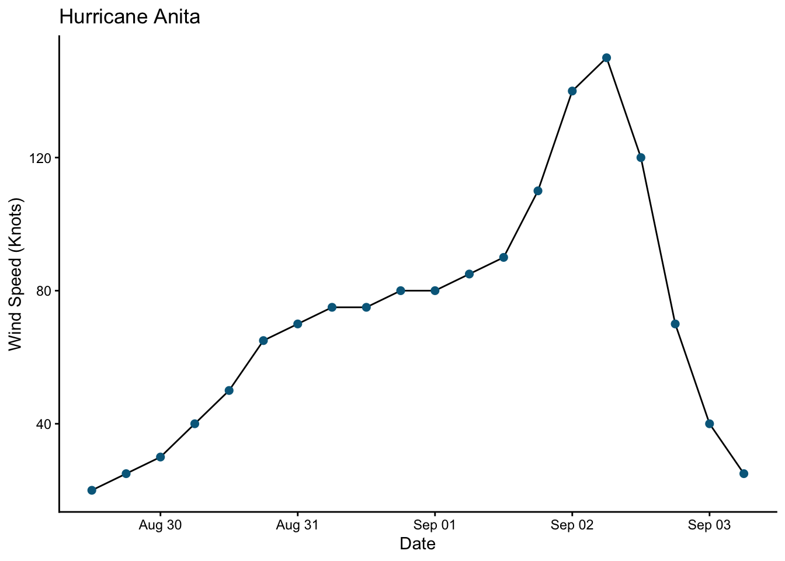
Maintenant on veut ajouter une ligne horizontale pour indiquer quand est-ce qu’Anita est devenue un ouragan (considéré un ouragan à partir d’un vent de 65 noeuds).
Pour ce faire, on utilise geom_hline en précisant bien le yintercept :
ggplot(
anita,
aes(x = timestamp, y = wind)
) +
geom_line(
linetype = 1,
linewidth = 0.5,
) +
geom_point(
color = "deepskyblue4",
size = 2) +
geom_hline(
linetype = 2,
yintercept = 65 # là où notre ligne débute sur l'axe des ordonnées
) +
labs(
x = "Date",
y = "Wind Speed (Knots)",
title = "Hurricane Anita"
) +
theme_classic()Testing Programs
Euh… là vraiment ils m’ont perdu… je comprends pas comment on passe de apprendre quelques fonctions et graphiques de base à tester son code quand on vient de programmer une fonction pour que tout se passe bien… POURQUOI ON PASSE DU COQ À L’ÂNE ?????????????????????????
Exceptions
quand notre programme rencontre un pb imprévu/truc qu’il sait pas gérer et s’arrête
par ex : on fait une fonction pour calculer la moyenne mais quand on veut l’utiliser on met des données de type character plutot que des nombres
Ici on veut que ça retourne “NA” quand on met une valeur non-numérique :
average <- function(x) {
if (!is.numeric(x)) {
return(NA)
}
sum(x) / length(x)
}Donc si on tape average(c("1", "2", "3")) on verra ça :
[1] NAFonction ‘message’
Pour avoir un message qui s’affiche dans la console
Par exemple, ici on veut spécifier la raison pour laquelle l’utilisateur ferait face au message NA en tapant une valeur autre que numérique :
average <- function(x) {
if (!is.numeric(x)) {
message("`x` must be a numeric vector. Returning NA instead.")
return(NA)
}
sum(x) / length(x)
}Donc si on tape average(c("1", "2", "3")) on verra “x must be a numeric vector. Returning NA instead.”
Fonction “warning”
Pour dire à l’utilisateur que qqc ne va pas
C’est d’ailleurs ce qu’on aurait dû utiliser (discutable) au lieu du message :
average <- function(x) {
if (!is.numeric(x)) {
warning("`x` must be a numeric vector. Returning NA instead.")
return(NA)
}
sum(x) / length(x)
}Donc si on tape average(c("1", "2", "3")) on verra “Warning message: In average(c(”1”, “2”, “3”)) : x must be a numeric vector. Returning NA instead.”
Fonction “stop”
Là c’est le next step encore, pour dire que la fonction peut pas tourner avec ce que l’utilisateur a tapé
Dans notre exemple ça ne va même pas donner “NA” parce que dès que l’utilisateur rentre une fonction non-numérique, ça va donner erreur :
average <- function(x) {
if (!is.numeric(x)) {
stop("`x` must be a numeric vector.")
}
sum(x) / length(x)
}Si on tape average(c("1", "2", "3")) on verra “Error in average(c(”1”, “2”, “3”)) : x must be a numeric vector.”
En gros ces trois fonctions, message, warning et stop permettent de communiquer avec l’utilisateur et faut adapter selon la situation.
On rajoute un warning dans notre exemple pour les cas où l’utilisateur fournit des données contenant des NAs :
average <- function(x) {
if (!is.numeric(x)) {
stop("`x` must be a numeric vector.")
}
if (any(is.na(x))) {
warning("`x` contains one or more NA values.")
return(NA)
}
sum(x) / length(x)
}Si cette fois-ci on tape average(c(1, 2, NA)) on verra “Warning message: In average(c(1, 2, NA)) : x contains one or more NA values.”
Unit Tests
C’est du code qu’on écrit pour tester des fonctions
En général on teste notre fonction dans un autre fichier.
Pour faire appel à notre premier fichier (celui qui contient la fonction créée), on utilise la fonction source.
Par exemple :
source("average6.R")Ensuite il a fait ça :
test_average <- function() {
if (average(c(1, 2, 3)) == 2) {
cat("`average` passed test :)\n")
} else {
cat("`average` failed test :(\n")
}
}
test_average()`average` passed test :)Mais j’avoue j’ai pas trop compris l’intérêt
Enfin surtout je comprends pas, il donne déjà le résultat dans son truc…genre ici 2…
Ensuite il enchaîne en ajoutant une autre figure de cas à son test avec des chiffres négatifs, puis une autre avec un zéro :
test_average <- function() {
if (average(c(1, 2, 3)) == 2) {
cat("`average` passed test :)\n")
} else {
cat("`average` failed test :(\n")
}
if (average(c(-1, -2, -3)) == -2) {
cat("`average` passed test :)\n")
} else {
cat("`average` failed test :(\n")
}
if (average(c(-1, 0, 1)) == 0) {
cat("`average` passed test :)\n")
} else {
cat("`average` failed test :(\n")
}
}
test_average()`average` passed test :)
`average` passed test :)
`average` passed test :)Ok je crois que je capte… en gros on met le résultat auquel on devrait s’attendre si notre fonction fonctionne correctement, et s’il s’avère qu’on a merdé dans le codage de notre fonction et qu’elle n’arrive pas au résultat escompté alors on aurait eu un “failed test”.
Mais bon ça fait beaucoup de lignes de code tout ça, c’est pour ça qu’on préfèrera utiliser le package testthat
Fonction “test_that”
Si ce n’est pas déjà fait :
library(testthat)
Attaching package: 'testthat'The following objects are masked from 'package:readr':
edition_get, local_editionDans la fonction on dit ce qu’on teste, suivi des cas qu’on teste.
test_that vient avec des fonctions à utiliser dedans, comme expect_equal pour exprimer le fait que quand on entre telles valeurs, on s’attend à ce que la fonction donne une valeur égale à…[telle valeur]
test_that("`average` calculates mean", {
expect_equal(average(c(1, 2, 3)), 2)
expect_equal(average(c(-1, -2, -3)), -2)
expect_equal(average(c(-1, 0, 1)), 0)
expect_equal(average(c(-2, -1, 1, 2)), 0)
})Test passed with 4 successes 😀.Pour que notre code reste lisible, il faut qu’on divise notre code selon ce qu’on fait.
Si on veut tester le fait que notre fonction émette un warning, il faut utiliser expect_warning (il existe aussi expect_no_warning).
Donc quand on met tel input, on aura un warning :
(nb : il a été nécessaire de réarranger l’ordre dans lequel on a écrit notre fonction pour que les tests tournent bien sur le average(c(NA, NA, NA)) parce que c’est pas considéré comme numérique donc ça stoppait, mais si on met notre stop après le warning, ça renvoie ce qu’on voulait : qu’il y a des NA)
test_that("`average` calculates mean", {
expect_equal(average(c(1, 2, 3)), 2)
expect_equal(average(c(-1, -2, -3)), -2)
expect_equal(average(c(-1, 0, 1)), 0)
expect_equal(average(c(-2, -1, 1, 2)), 0)
})Test passed with 4 successes 🥳.test_that("`average` warns about NAs in input", {
expect_warning(average(c(1, NA, 3)))
expect_warning(average(c(NA, NA, NA)))
})Test passed with 2 successes 🎉.Bon le frérot rajoute encore et toujours des figures de cas à tester, maintenant on en met une entre les deux qu’on a déjà (je les ai pas mises ici par souci de lisibilité) pour utiliser la fonction suppressWarnings pour ignorer les warning et juste tester la valeur obtenue.
test_that("`average` returns NA with NAs in input", {
expect_equal(suppressWarnings(average(c(1, NA, 3))), NA)
expect_equal(suppressWarnings(average(c(NA, NA, NA))), NA)
})Test passed with 2 successes 😀.La fonction expect_error permet de dire qu’on s’attend à une erreur si on donne telle valeur, ici on le fait avec des valeurs de type character :
test_that("`average` stops if `x` is non-numeric", {
expect_error(average(c("quack!")))
expect_error(average(c("1", "2", "3")))
})Test passed with 2 successes 😸.Test Driven Development
Franchement j’ai un peu lâché l’affaire, ça m’a perdu tout ça.
Test driven development : commence par écrire le test de sa fonction avant d’écrire sa fonction.
Behavior-Driven Development
Utilise fonctions describe pour décrire ce qu’on veut que notre fonction fasse et it pour que notre fonction fasse qqc en particulier.
Packaging Programs
Peut-être que je regarderai la vidéo un jour mais la partie testing m’a vraiment découragé.